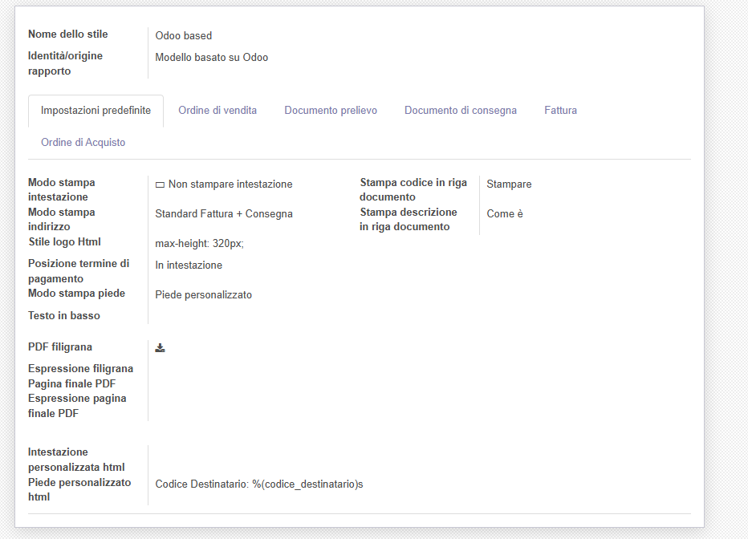

Manage document multiple reports

Gestisce modelli diversi di stampa


Install this module if you wish to wish customize your report printing.
The module is built on follow concepts:
Installate questo modulo se volete personalizzare i modelli di stampa.
Il modulo è costruito sui seguenti concetti:
| Feature / Funzione | Notes / Note | |
| Print original Odoo reports / Stampa modelli originali di Odoo | Style configuration = Odoo/Configurazione a livello di stile = Odoo | |
| Header line-up: logo and slogan / Intestazione solo logo e slogan | ||
| Header line-up: logo and company data / Intestazione solo logo e dati azienda | Company data shifted up / Dati aziende spostati in alto | |
| Header line-up: logo and customized data / Intestazione solo logo e dati personalizzati | You can use macroes to retriebe company data / Disponibili macro per caricare dati aziendali | |
| Header with only wide logo / Intestazione solo logo largo | Logo with company data / Logo con i dati dell'azienda | |
| Header without data / No intestazione | Use preprinted paper / Utilizzo su carta intestata | |
| Custom footer / Piede personalizzato | You can use macroes to retriebe company data / Disponibili macro per caricare dati aziendali | |
| Optional separation line / Linea di separazione opzionale | ||
| Address mode / Modo stampa indirizzo | Print 2 addresses or only the specific one / Stampa doppio indirizzo o solo specifico | |
| Print product code / Stampa codice prodotto | ||
| Print description without code / Stampa descrizione senza codice | Extract code from description / Estrapola il codice dalla descrizione | |
| Configurable documents / Documenti configurabili: | Sale order, Delivery document, Invoice, Purchase order / Ordine cliente, DdT, Fattura, Ordine a fornitore | |
| Watermark / Filigrana | High quality report / Stampa di alta qualità | |
| Ending page / Pagina finale | Ending page with commercial info / Pagina finale con informazioni commerciali | |
This module gives a lot of pretty features to print nice reports.
Inside every report it is possible check for some characteristics and/or add some values. The value of every parameter is evaluate in fallback way. The fallback path is:
1. Valid value (not null and not space) in report (model ir_action_report_xml) 2. Valid value (not null and not space) in template of report (model multireport.template), if declared 3. Valid value (not null and not space) in specific document style (model multireport.style) 4. Value in default document style (model multireport.style) 5. For some parameters, for historical reason, value may be load from other sources (i.e. custom footer)
In report the fallback function is report.get_report_attrib(PARAM,o,doc_opts), where param is parameter to get value.
Report may load specific value if declare field as follow:
Warning! If report get value directly from report or style, can get a None value and result may be unexpected.
Look at follow table for details:
| Name | Description | Notes / Example | ||
| address_mode | Which addresses are printed | Only invoices, order and deliveires | ||
| bottom_text | Text to print at the bottom of the document | |||
| code | Product code | |||
| code_mode | Print code in document body | <t t-set="code_mode" t-value="report.get_report_attrib('code_mode',o,doc_opts)"/> | ||
| company | Company of current document | Set by external layout | ||
| company_partner | Company partner of current document | Set by external layout | ||
| datetime | Python datetime instance | Only in render by Odoo core | ||
| ddt_ref_text | Text at every change of delivery document | |||
| debug | Session in developer mode | Only in render by Odoo core | ||
| description_mode | Print code in document body | <t t-set="description_mode" t-value="report.get_report_attrib('description_mode',o,doc_opts)"/> | ||
| doc | Current document which is printing | Set by module. External layout set 'o' to compatibility with Odoo reports | ||
| doc_ids | Document object Id(s) | Set by Odoo core | ||
| doc_model | Document model | It is the same of use doc_opts.model | ||
| doc_opts | Document parametes | |||
| doc_opts.model | Document model | Same as doc_model, set by Odoo core | ||
| doc_opts.paperformat_id | ID to paperformat | Only invoices, order and deliveires | ||
| doc_opts.report_name | Report Name | |||
| doc_style | Style parameteres | |||
| doc_style.name | Name of Style | |||
| doc_style.origin | `Report Identity` (see below) | |||
| docs | Document objects list | Set by Odoo core | ||
| env | Environment | Only in render by Odoo core | ||
| footer_mode | How to print footer | |||
| header_mode | How to print header | |||
| l | Current invoice line when printing | Alias used only in invoice print | ||
| logo style | Html logo style | Default is “max-height: 45px | ” | |
| o | Current invoice which is printing | Alias used in invoice print set by external layout | ||
| order_ref_text | Text at every change of order reference | |||
| payment_term_position | Payment data position | Only invoices, order and deliveries | ||
| pdf_ending_page | Default Ending Page for this report | |||
| pdf_ending_page_expression | Default Ending Page for this report | |||
| pdf_watermark | Default watermark for this report | |||
| pdf_watermark_expression | Default watermark for this report | |||
| relativedelta | relativedelta.docutils.relativedelta.relativedelta | Only in render by Odoo core | ||
| report | Document report class | Only invoices, order and deliveires | ||
| report.get_report_attrib | Get specific fallback value | <div t-if="report.get_report_attrib('header_mode',o,doc_opts)"> .. </div>. | ||
| res_company | Default company | Set by Odoo report module | ||
| res_company | Company of current document | Set by Odoo core | ||
| style | Current `Report Identity` (see below) | |||
| time | Python time instance | No invoices, orders and deliveries | ||
| xmlid | External identifier of current report | Only in render by Odoo core | ||
`Report Identity`
Report Identity is used to select standard Odoo reports or customized reports. If value is 'Odoo' all customization is disabled and original Odoo reports are printed. It is only an attribute of company style.
`Header mode`
This parameter, named `header_mode` set how the header is printed. May be one of 'standard', 'logo', 'only_logo', 'line-up', 'line-up2', 'line-up3', 'line-up4', 'line-up5', 'line-up6', 'no_header'
`Footer mode`
This parameter, name `footer_mode` set how the footer is printed. May be one of 'standard', 'auto', 'custom', 'no_footer'
`Address mode`
This parameter, named `address_mode` set how the partner address is printed. May be on of 'standard', 'only_one'.
`Payment Term Position`
This parameter, named `payment_term_position` set where the payment datas (payment term, due date and payment term notes) are printed. May be one of 'odoo', 'auto', 'header', 'header_no_iban', 'footer', 'footer_no_iban', 'footer_notes', 'none'
`Print code`
This parameter, name `code_mode` manage the printing of product code in document lines. May be one of: 'print', 'no_print'
`Print description`
This parameter, name `description_mode` manage the printing of description in document lines. May be one of: 'as_is', 'line1', 'nocode', 'nocode1'
`Order reference text`
This parameter, named `order_ref_text` contains the text to print before every line of document body when order changes. May be used following macroes:
%(client_order_ref)s => Customer reference of order %(order_name)s => Sale order number %(date_order)s => Sale order date
i.e. "Order #: %(order_name)s - Your ref: %(client_order_ref)s"'
`DdT reference text`
This parameter, named `ddt_ref_text` contains the text to print before every line of document body when delivery document changes. May be used following macroes:
%(ddt_number)s => Delivery document number %(date_ddt)s => Delivery document date %(date_done)s => Delivery date
'i.e. "Ddt #: %(ddt_number)s of %(date_ddt)s"'
`Delivery Date`
In sale order you can print Delivery Date of every line. This feature requires the sale_order_line_date module installed.
`Custom Header`
This parameter, named `custom_header` contains the html code to print when header_mode is set to line_up5 or line_up6. May be used following macroes:
%(banks)s => IBAN of company %(city)s => City of company %(email)s => e-mail of company %(fax)s %(mobile)s %(name)s %(phone)s %(street)s %(street2)s %(vat)s %(website)s %(zip)s %(codice_destinatario)s (solo se installato modulo fattura elettronica) %(fatturapa_rea_capital)s (solo se installato modulo fattura elettronica) %(fatturapa_rea_number)s (solo se installato modulo fattura elettronica) %(fatturapa_rea_office)s (solo se installato modulo fattura elettronica) %(fiscalcode)s (solo se installato modulo codice fiscale) %(ipa_code)s (solo se installato modulo codice ipa)
In xml report it is also possible test the existence of a field. The should be as follow:
` <div t-if="'some_field' in docs[0]">FOUND SOME FIELD</div> <div t-if="'some_field' not in docs[0]">NOT FOUND SOME FIELD</div> `
Authors | Autori:
Contributors | Partecipanti:
This module is maintained by the SHS_AV s.r.l..
This module is part of l10n-italy-supplemental project.
Published information on | Informazioni pubblicate: 2026-08-26